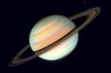
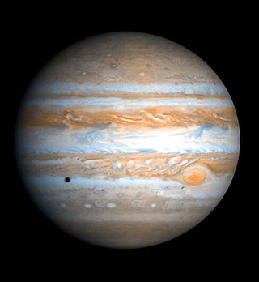
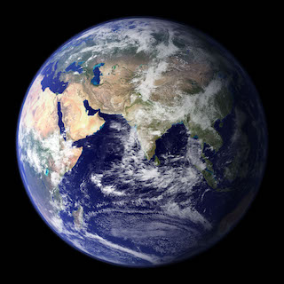

| Planet Image |
Planet Name |
Planet Profile |
 |
Venus |
- Mass (kg): 4.87 x 1024
- Diameter (km): 12104
- Mean Density(kg/m^3): 5250
- Escape Velocity(m/s): 10400
- Average Distance from sun: 0.723 AU (108,208,930 km)
- Rotation period(length of day in Earth days): 243.02 (retrograde)
- Revolution period(length of year in Earth days): 224.7
|
|  |
Saturn |
- Mass (kg): 5.69 x 1026
- Diameter (km): 120660
- Mean Density(kg/m^3): 690
- Escape Velocity(m/s): 35600
- Average Distance from sun: 9.537 AU (1,426,725,400 km)
- Rotation period(length of day in Earth days): 0.44 (10.2 Earth hours)
- Revolution period(length of year in Earth days): 29.46
|
|  |
Jupiter |
- Mass (kg): 1.90 x 1027
- Diameter (km): 142,800
- Mean Density(kg/m^3): 1314
- Escape Velocity(m/s): 59500
- Average Distance from sun: 5.203 AU (778,412,020 km)
- Rotation period(length of day in Earth days): 0.41 (9.8 Earth hours)
- Revolution period(length of year in Earth days):11.86
|
|  |
Earth |
- Mass (kg): 5.98 x 1024
- Diameter (km): 12756
- Mean Density(kg/m^3): 5520
- Escape Velocity(m/s): 11200
- Average Distance from sun: 1 AU (149,597,890 km)
- Rotation period(length of day in Earth days): 1 (23.93 hours)
- Revolution period(length of year in Earth days): 365.26
|